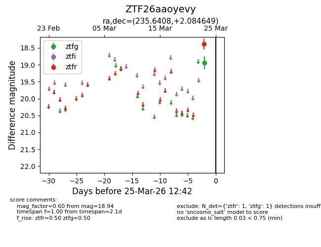
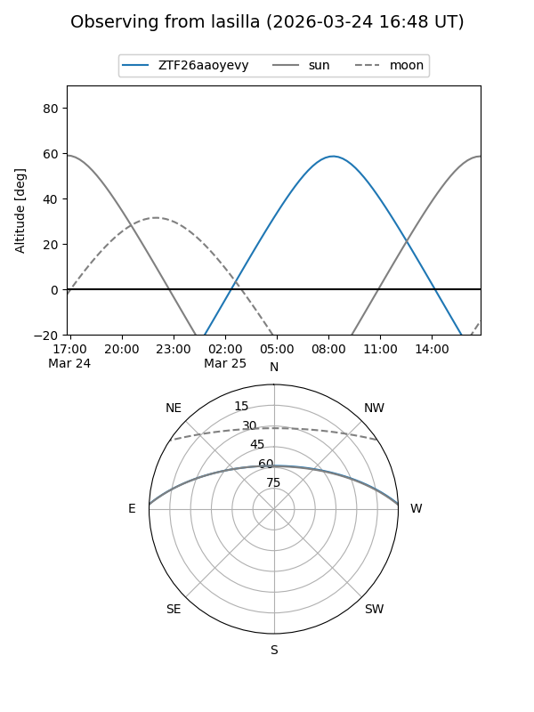
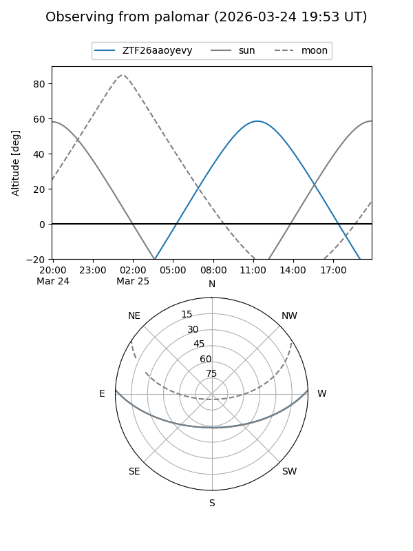

ZTF26aaoyevy
Target ZTF26aaoyevy at 2026-03-25 12:44
Aliases and brokers:
FINK: link
Lasair: link
ALeRCE: link
alt names
ZTF26aaoyevy (ztf,fink_ztf)
Coordinates:
equatorial (ra, dec) = 235.6408,+2.08465
equatorial (HMS+DMS) = 15:42:33.79,+02:05:04.73
galactic (l, b) = (8.9408,+42.01789)
Flags:
Photometry:
last ztfg=18.94, ztfr=18.38
1 ztfg, 1 ztfr detections
Lightcurve

Visibility


Additional plots